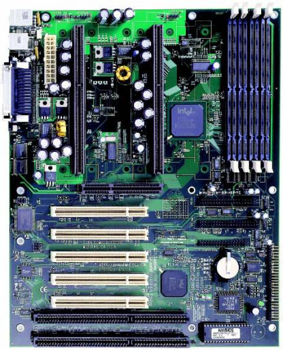

← Listeye Dön
🌐 Resmi Destek

Tyan S1832DL
Intel 440BX yonga setiyle çift Slot 1 işlemci desteği sunan anakart.
Özellik
Değer
Soket
Dual Slot 1
Chipset
Intel 440BX
RAM
4x SDRAM Slot
PCIe
AGP 2x + PCI